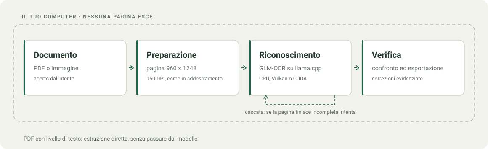
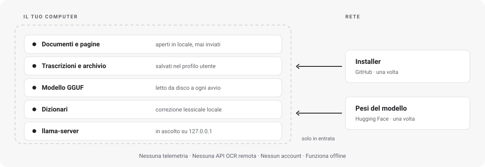

PDF e immagini
PDF, PNG, JPEG, TIFF, BMP, WebP e GIF. Navigazione per pagina e OCR forzabile sui PDF con testo.
Trascrivi le tue pagine, confronta ogni parola ed esporta il risultato. Con un fine-tuning di GLM-OCR, senza caricare i documenti su un servizio cloud.

Il riconoscimento gira sul computer. Nessuna API OCR remota per elaborare le pagine.
Controlla il testo e le correzioni con il documento a fianco, pagina per pagina.
Copia il testo o esportalo in TXT, Markdown e DOCX per continuare il lavoro.
DAL FILE AL TESTO
Una finestra per importare, trascrivere e verificare.
Il modello lavora dietro le quinte con llama.cpp.
Apri un PDF o trascina un’immagine nell’app.
GLM-OCR legge la pagina. Se il PDF contiene già testo, puoi estrarlo direttamente.
Confronta l’uscita con l’originale e verifica le correzioni evidenziate.
Porta il risultato nel tuo editor, mantenendo una sessione nell’archivio locale.

PENSATA PER LE PAGINE
PDF, PNG, JPEG, TIFF, BMP, WebP e GIF. Navigazione per pagina e OCR forzabile sui PDF con testo.
Un dizionario italiano pubblico aiuta la correzione lessicale. Le sostituzioni restano riconoscibili.
Leggi le formule riconosciute e le tabelle nella trascrizione. Verifica sempre struttura e simboli.
Tema chiaro, scuro o automatico. Archivio locale per ritrovare le sessioni.
DOVE RESTANO I DATI
Il motore ascolta solo su 127.0.0.1.
Nessuna telemetria, nessun account, nessuna API OCR remota.

Per il passaggio OCR non interviene un responsabile esterno del trattamento, non c’è trasferimento verso paesi terzi e non esiste una copia lato server. È la differenza sostanziale rispetto a un OCR cloud, e riduce il perimetro in modo concreto.
La conformità al GDPR resta in capo al titolare del trattamento: base giuridica, informativa, conservazione, sicurezza del dispositivo e gestione dell’archivio locale, che l’app salva nel profilo utente e che la disinstallazione non rimuove. Dettagli in PRIVACY.md.
INIZIA DA QUI
Applicazione e modello si scaricano separatamente.
Dopo la configurazione, puoi trascrivere offline.
Installer x64 per utente. Include app, motore, runtime, dizionari pubblici e licenze.
Scarica l’installer .exeRichiede WebView2. Pacchetto non firmato: controlla origine e checksum. I pesi non sono inclusi.
Il fine-tuning e il proiettore visivo in formato GGUF. Due file, circa 1,2 GB complessivi, da mettere nella cartella models dell’app.
Il dataset rimane privato e non serve per usare l’app.
CPU oppure GPU compatibile con Vulkan o CUDA. Il backend dipende da hardware e driver. Questa release distribuisce solo Windows.
UN PROGETTO APERTO
ITA-OCR combina Tauri, Rust e llama.cpp con un fine-tuning di GLM-OCR. Il codice originale è MIT; le dipendenze mantengono le proprie licenze.
Per scaricare applicazione e pesi sì. Per elaborare i documenti con tutti i componenti installati, no. L’app esegue il riconoscimento localmente.
No. Il motore può usare Vulkan su GPU compatibili oppure CPU. CUDA è un’opzione per hardware NVIDIA. Le prestazioni dipendono dalla configurazione.
No. Scrittura difficile, formule e impaginazioni complesse possono causare errori. L’interfaccia affianca il risultato all’originale proprio per agevolare la verifica.
No. Il riconoscimento avviene sul computer e il motore ascolta solo sull’indirizzo di loopback. La rete serve a scaricare applicazione e pesi, una volta sola.
No. Il dataset resta privato e non è incluso nei download. Il codice dell’app e i pesi del modello hanno canali di distribuzione separati.